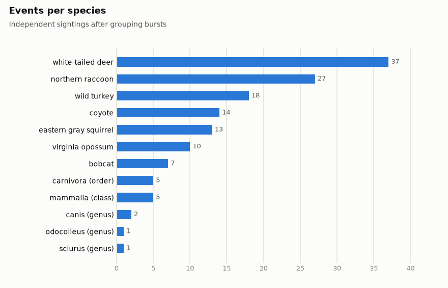
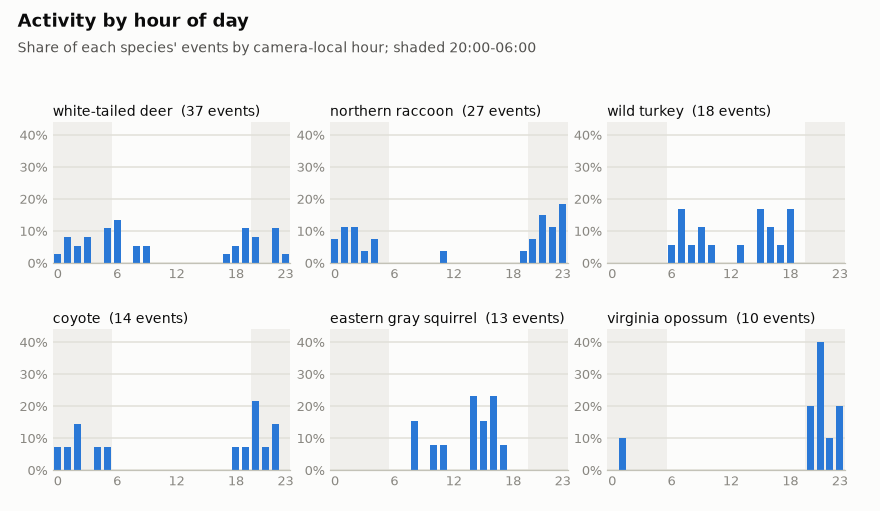
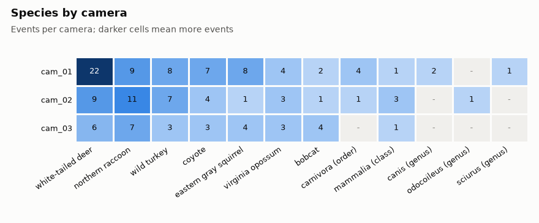
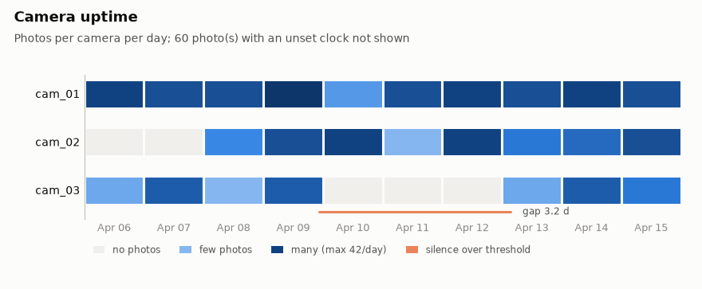

Camera-trap pipeline report (synthetic demo)
810 photos from 3 cameras, 2026-04-06 to 2026-04-15.
Synthetic data: the photos were generated by camera_trap_pipeline.synthetic and the detector and classifier outputs are simulated. The numbers show what the pipeline produces, not real wildlife.
Photos
810
Cameras
3
Animal events
140
Species
7
Unreadable photos
1
Unset-clock photos
60
Near-duplicates (%)
70.8
Species
An event is one burst of photos from one camera; its count is the largest number of animals of that species in any single frame.

| Species | Events | Cameras | Animals (sum of event counts) | First seen | Last seen |
|---|---|---|---|---|---|
| white-tailed deer | 37 | 3 | 75 | 2026-04-06 03:18 | 2026-04-15 18:32 |
| northern raccoon | 27 | 3 | 40 | 2026-04-06 02:38 | 2026-04-15 23:37 |
| wild turkey | 18 | 3 | 58 | 2026-04-06 07:52 | 2026-04-15 18:47 |
| coyote | 14 | 3 | 22 | 2026-04-07 02:34 | 2026-04-15 04:43 |
| eastern gray squirrel | 13 | 3 | 19 | 2026-04-06 11:40 | 2026-04-15 16:25 |
| virginia opossum | 10 | 3 | 10 | 2026-04-09 01:00 | 2026-04-14 21:35 |
| bobcat | 7 | 3 | 7 | 2026-04-06 05:24 | 2026-04-15 20:35 |
| carnivora (order) | 5 | 2 | 7 | 2026-04-06 23:54 | 2026-04-11 05:54 |
| mammalia (class) | 5 | 3 | 5 | 2026-04-08 19:56 | 2026-04-15 20:15 |
| canis (genus) | 2 | 1 | 3 | 2026-04-07 04:12 | 2026-04-15 00:42 |
| odocoileus (genus) | 1 | 1 | 1 | 2026-04-12 05:47 | 2026-04-12 05:47 |
| sciurus (genus) | 1 | 1 | 2 | 2026-04-08 23:44 | 2026-04-08 23:44 |
When animals are active

Events by hour (table)
| Species | 00 | 01 | 02 | 03 | 04 | 05 | 06 | 07 | 08 | 09 | 10 | 11 | 12 | 13 | 14 | 15 | 16 | 17 | 18 | 19 | 20 | 21 | 22 | 23 |
|---|---|---|---|---|---|---|---|---|---|---|---|---|---|---|---|---|---|---|---|---|---|---|---|---|
| bobcat | 0 | 1 | 0 | 0 | 1 | 1 | 1 | 1 | 0 | 0 | 0 | 0 | 0 | 0 | 0 | 0 | 0 | 0 | 0 | 0 | 1 | 0 | 1 | 0 |
| canis (genus) | 1 | 0 | 0 | 0 | 1 | 0 | 0 | 0 | 0 | 0 | 0 | 0 | 0 | 0 | 0 | 0 | 0 | 0 | 0 | 0 | 0 | 0 | 0 | 0 |
| carnivora (order) | 0 | 0 | 1 | 0 | 0 | 1 | 0 | 0 | 0 | 0 | 0 | 0 | 0 | 0 | 0 | 0 | 0 | 0 | 0 | 0 | 1 | 0 | 1 | 1 |
| coyote | 1 | 1 | 2 | 0 | 1 | 1 | 0 | 0 | 0 | 0 | 0 | 0 | 0 | 0 | 0 | 0 | 0 | 0 | 1 | 1 | 3 | 1 | 2 | 0 |
| eastern gray squirrel | 0 | 0 | 0 | 0 | 0 | 0 | 0 | 0 | 2 | 0 | 1 | 1 | 0 | 0 | 3 | 2 | 3 | 1 | 0 | 0 | 0 | 0 | 0 | 0 |
| mammalia (class) | 1 | 0 | 0 | 0 | 0 | 0 | 0 | 0 | 0 | 0 | 0 | 0 | 0 | 0 | 0 | 0 | 0 | 0 | 0 | 1 | 2 | 0 | 1 | 0 |
| northern raccoon | 2 | 3 | 3 | 1 | 2 | 0 | 0 | 0 | 0 | 0 | 0 | 1 | 0 | 0 | 0 | 0 | 0 | 0 | 0 | 1 | 2 | 4 | 3 | 5 |
| odocoileus (genus) | 0 | 0 | 0 | 0 | 0 | 1 | 0 | 0 | 0 | 0 | 0 | 0 | 0 | 0 | 0 | 0 | 0 | 0 | 0 | 0 | 0 | 0 | 0 | 0 |
| sciurus (genus) | 0 | 0 | 0 | 0 | 0 | 0 | 0 | 0 | 0 | 0 | 0 | 0 | 0 | 0 | 0 | 0 | 0 | 0 | 0 | 0 | 0 | 0 | 0 | 1 |
| virginia opossum | 0 | 1 | 0 | 0 | 0 | 0 | 0 | 0 | 0 | 0 | 0 | 0 | 0 | 0 | 0 | 0 | 0 | 0 | 0 | 0 | 2 | 4 | 1 | 2 |
| white-tailed deer | 1 | 3 | 2 | 3 | 0 | 4 | 5 | 0 | 2 | 2 | 0 | 0 | 0 | 0 | 0 | 0 | 0 | 1 | 2 | 4 | 3 | 0 | 4 | 1 |
| wild turkey | 0 | 0 | 0 | 0 | 0 | 0 | 1 | 3 | 1 | 2 | 1 | 0 | 0 | 1 | 0 | 3 | 2 | 1 | 3 | 0 | 0 | 0 | 0 | 0 |
Where

Species by camera (table)
| Camera | Species | Events | Animals | Largest group | Events per 100 effort days |
|---|---|---|---|---|---|
| cam_01 | white-tailed deer | 22 | 43 | 3 | 229.4 |
| cam_01 | northern raccoon | 9 | 13 | 2 | 93.8 |
| cam_01 | eastern gray squirrel | 8 | 13 | 2 | 83.4 |
| cam_01 | wild turkey | 8 | 26 | 5 | 83.4 |
| cam_01 | coyote | 7 | 10 | 2 | 73.0 |
| cam_01 | carnivora (order) | 4 | 5 | 2 | 41.7 |
| cam_01 | virginia opossum | 4 | 4 | 1 | 41.7 |
| cam_01 | bobcat | 2 | 2 | 1 | 20.9 |
| cam_01 | canis (genus) | 2 | 3 | 2 | 20.9 |
| cam_01 | mammalia (class) | 1 | 1 | 1 | 10.4 |
| cam_01 | sciurus (genus) | 1 | 2 | 2 | 10.4 |
| cam_02 | northern raccoon | 11 | 16 | 2 | 138.7 |
| cam_02 | white-tailed deer | 9 | 16 | 3 | 113.5 |
| cam_02 | wild turkey | 7 | 23 | 5 | 88.3 |
| cam_02 | coyote | 4 | 6 | 2 | 50.4 |
| cam_02 | mammalia (class) | 3 | 3 | 1 | 37.8 |
| cam_02 | virginia opossum | 3 | 3 | 1 | 37.8 |
| cam_02 | bobcat | 1 | 1 | 1 | 12.6 |
| cam_02 | carnivora (order) | 1 | 2 | 2 | 12.6 |
| cam_02 | eastern gray squirrel | 1 | 1 | 1 | 12.6 |
| cam_02 | odocoileus (genus) | 1 | 1 | 1 | 12.6 |
| cam_03 | northern raccoon | 7 | 11 | 2 | 105.1 |
| cam_03 | white-tailed deer | 6 | 16 | 3 | 90.1 |
| cam_03 | bobcat | 4 | 4 | 1 | 60.1 |
| cam_03 | eastern gray squirrel | 4 | 5 | 2 | 60.1 |
| cam_03 | coyote | 3 | 6 | 2 | 45.0 |
| cam_03 | virginia opossum | 3 | 3 | 1 | 45.0 |
| cam_03 | wild turkey | 3 | 9 | 4 | 45.0 |
| cam_03 | mammalia (class) | 1 | 1 | 1 | 15.0 |
Camera health
Effort days are the days from first to last photo minus long silences. A trail camera only fires on motion, so a silence can be a quiet spell rather than an outage.

| Camera | Photos | Effort days | Long silences | Longest silence (h) | Unset clock | Unreadable | Night IR (%) | Blurry (%) | Near-dup (%) | Empty (%) |
|---|---|---|---|---|---|---|---|---|---|---|
| cam_01 | 357 | 9.6 | 0 | 12.2 | 0 | 1 | 58.1 | 3.4 | 73.3 | 9.3 |
| cam_02 | 294 | 7.9 | 0 | 13.3 | 60 | 0 | 53.1 | 0.0 | 71.1 | 15.3 |
| cam_03 | 159 | 6.7 | 1 | 77.2 | 0 | 0 | 56.6 | 0.0 | 64.8 | 11.3 |
| Camera | Last photo before | First photo after | Hours |
|---|---|---|---|
| cam_03 | 2026-04-09 22:18 | 2026-04-13 03:29 | 77.2 |
Largest sightings
| Event | Camera | Start | Seconds | Photos | Species | Count |
|---|---|---|---|---|---|---|
| cam_02-e00053 | cam_02 | 2026-04-15 18:47 | 34.0 | 9 | wild turkey | 5 |
| cam_01-e00004 | cam_01 | 2026-04-06 07:52 | 22.0 | 6 | wild turkey | 5 |
| cam_01-e00037 | cam_01 | 2026-04-10 13:46 | 2.0 | 3 | wild turkey | 5 |
| cam_02-e00040 | cam_02 | 2026-04-13 08:30 | 30.0 | 6 | wild turkey | 4 |
| cam_01-e00062 | cam_01 | 2026-04-13 15:35 | 2.0 | 3 | wild turkey | 4 |
| cam_02-e00049 | cam_02 | 2026-04-15 06:40 | 2.0 | 3 | wild turkey | 4 |
| cam_03-e00036 | cam_03 | 2026-04-15 16:39 | 2.0 | 3 | wild turkey | 4 |
| cam_01-e00002 | cam_01 | 2026-04-06 05:06 | 31.0 | 9 | white-tailed deer | 3 |
| cam_03-e00025 | cam_03 | 2026-04-13 03:29 | 64.0 | 9 | white-tailed deer | 3 |
| cam_01-e00009 | cam_01 | 2026-04-07 02:24 | 33.0 | 6 | white-tailed deer | 3 |
| cam_03-e00019 | cam_03 | 2026-04-09 08:07 | 38.0 | 6 | white-tailed deer | 3 |
| cam_02-e00006 | cam_02 | 2026-04-09 09:01 | 13.0 | 6 | wild turkey | 3 |
Output tables
Every table is Parquet in the run folder and can be queried with pandas, DuckDB or any Arrow reader.
| File | Rows | One row per | Contents |
|---|---|---|---|
| media.parquet | 810 | photo | Path, camera, timestamp and its source, EXIF make/model |
| quality.parquet | 810 | photo | Sharpness, brightness, IR flag, dhash, near-duplicate group |
| detections.parquet | 1,403 | box | Category, confidence and normalized box from the detector |
| classifications.parquet | 1,242 | animal box | Species call after roll-up, top-5 labels |
| photos.parquet | 810 | photo | Everything above joined, plus counts and event id |
| events.parquet | 174 | event | Burst of photos from one camera: time span, counts, species |
| event_species.parquet | 140 | event and species | Largest single-frame count per species |